Torres Produções
Torres ProduçõesVocê grava. A gente edita e publica.
A Torres Produções é um estúdio de edição de vídeo para criadores. Você manda o material bruto e recebe Reels, Shorts e vídeos de TikTok com ritmo, legenda e motion, prontos para o seu perfil.
Atendimento online para criadores de todo o Brasil.
O que a gente faz
Para criadores que querem postar com frequência sem passar a noite na linha do tempo. Cada vídeo sai pensado para o formato onde vai ser visto.
Vídeos curtos
Reels, Shorts e TikTok. Corte no ritmo da fala, legenda que acompanha a voz, zoom e texto na tela na hora certa, e um gancho forte nos primeiros segundos.
Vídeos para o YouTube
Versão longa em 16:9: limpeza de pausas e tropeços, cor e som acertados, trechos de apoio e capa.
Séries originais
Do roteiro à animação: formatos próprios com narração, ilustração e efeitos sonoros. A série "E se você...?" nasceu aqui.
Publicação nas suas redes
Com a sua autorização, o vídeo aprovado vai direto para o seu perfil, no horário combinado. Ou você recebe o arquivo final e posta quando quiser.
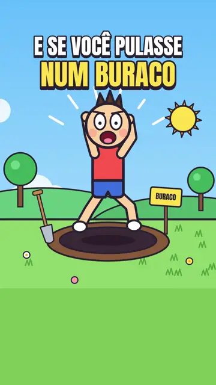
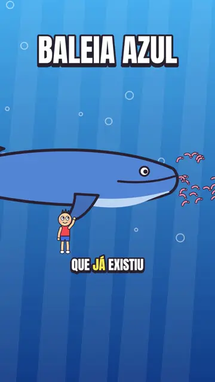
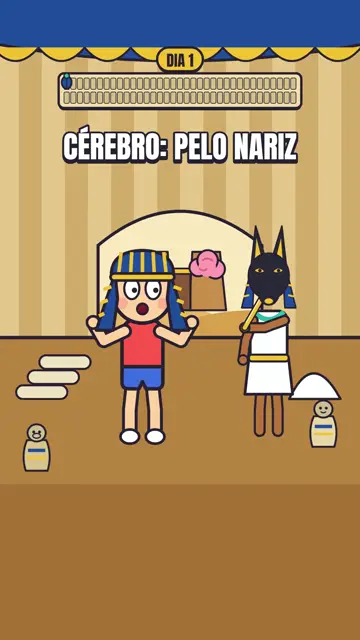
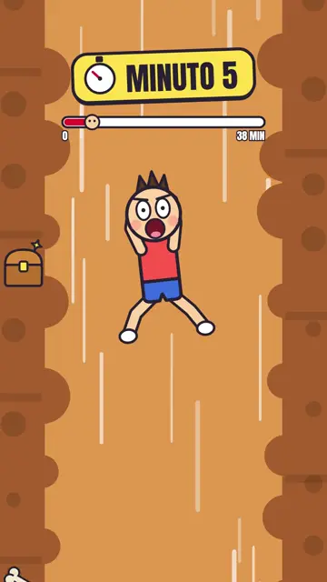
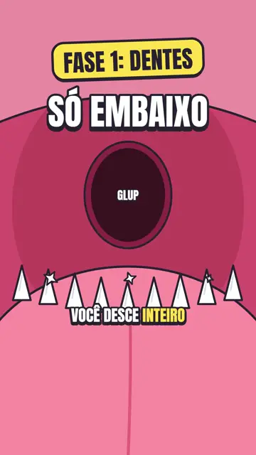
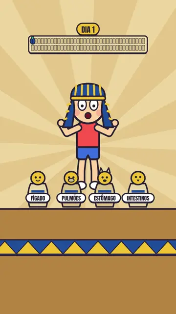
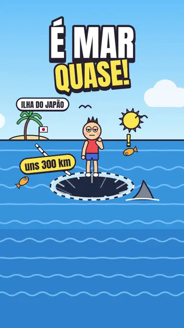
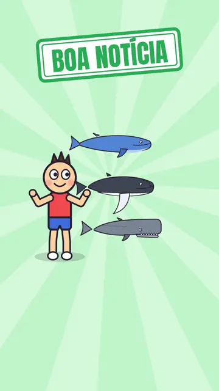
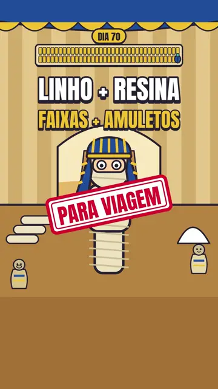
Como funciona
Quatro passos, e você decide em cada um deles. Nada é publicado sem o seu ok.
Envie o material
Mande os vídeos brutos por link do Google Drive ou pelo WhatsApp, com uma ideia do que quer dizer.
Receba a prévia
Você recebe o vídeo editado para assistir no celular, do jeito que ele vai aparecer no feed.
Aprove ou peça ajuste
Diga o que mudar. A gente ajusta até ficar do seu jeito.
Publicação
Com o vídeo aprovado, publicamos no seu perfil no horário combinado, ou entregamos o arquivo para você postar.
Série original: E se você...?
Vídeos curtos que respondem perguntas absurdas com fatos de verdade, contados em desenho. Roteiro, ilustração, animação e som feitos pelo estúdio. Assista no TikTok.
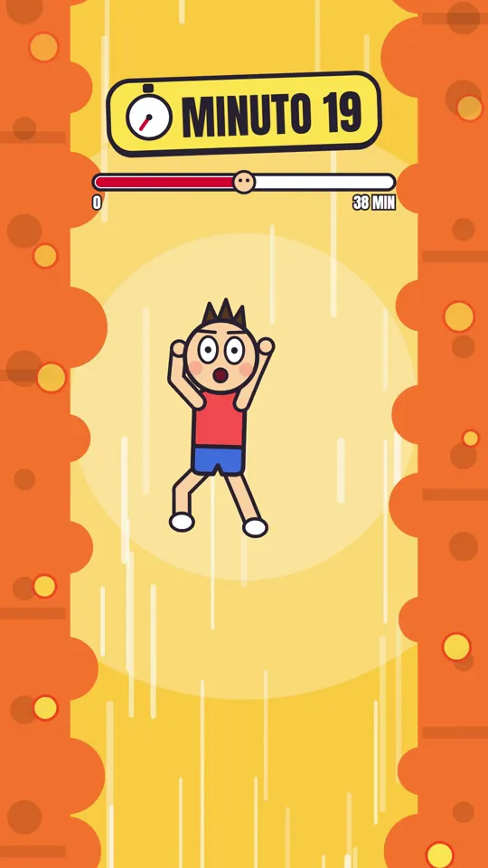
E se você pulasse num buraco que atravessa a Terra?
Física da queda, minuto a minuto.
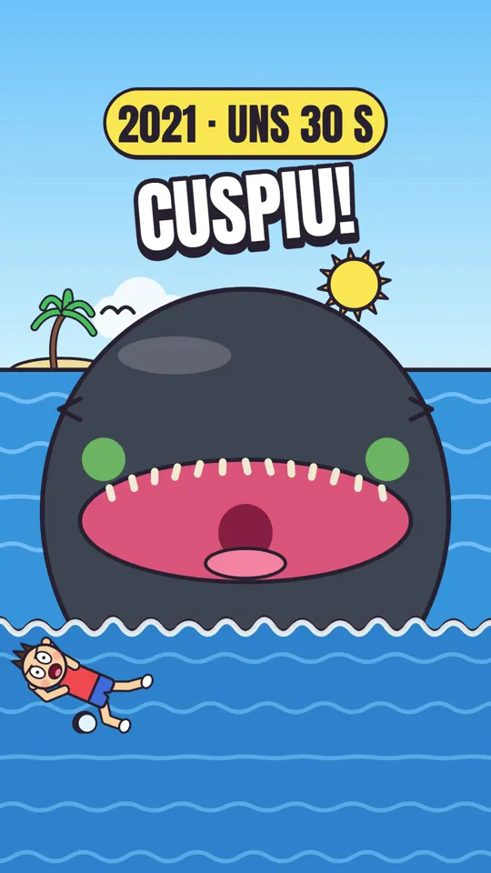
E se você fosse engolido por uma baleia?
O que a ciência sabe sobre o cachalote.
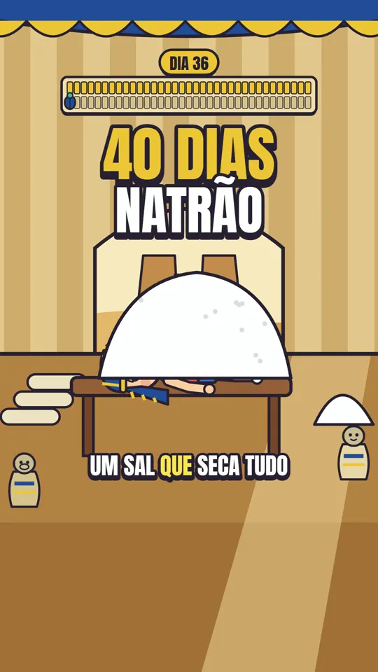
E se você fosse mumificado no Egito?
Os 70 dias do processo, contados pelos museus.
Publicação no TikTok
Para publicar os vídeos por você, a Torres Produções usa a integração oficial do TikTok. A conexão é feita uma vez e você continua no controle da sua conta.
In English
Torres Produções is a video editing studio. Creators who work with us can connect their TikTok account through TikTok's official login. We only publish videos we edited for them, after they approve each one, with the caption and privacy settings chosen for that post. We never see passwords, and creators can disconnect at any time. Privacy Policy · Terms of Service
- Conexão pela tela oficial do TikTok. O estúdio te manda um link pessoal, você entra na sua conta e autoriza a Torres Produções. Sua senha nunca passa por nós.
- Acesso mínimo. Vemos só o nome e a foto do perfil, para confirmar a conta certa, e a permissão de publicar vídeos.
- Só com a sua aprovação. Cada vídeo é publicado depois que você aprova, com a legenda e a privacidade escolhidas para aquele post.
- Sem mexer em mais nada. Não lemos mensagens, seguidores ou estatísticas, e não curtimos, comentamos nem seguimos ninguém em seu nome.
- Desconecte quando quiser. Pelas configurações do TikTok, na lista de apps conectados, ou pedindo para a gente. Veja a política de privacidade.
Perguntas frequentes
Quanto custa?
Depende do volume e do tipo de vídeo. Mande uma mensagem contando o que você precisa e a gente responde com uma proposta.
Em quanto tempo recebo o vídeo?
O prazo é combinado no começo, de acordo com o tamanho e a quantidade de vídeos. A prévia sempre chega antes da data de publicação, para dar tempo de você pedir ajuste.
Preciso passar a minha senha?
Não. A conexão com o TikTok é feita na tela oficial do próprio TikTok. Para o Instagram e o YouTube, a gente combina o melhor jeito com você, sempre sem pedir senha por mensagem.
Vocês publicam alguma coisa sem eu ver?
Não. Todo vídeo passa pela sua aprovação antes. Se você não aprovar, ele não sai.
Para quais redes vocês editam?
Instagram (Reels e carrossel), YouTube (vídeos longos e Shorts) e TikTok.
Posso desconectar a minha conta?
Sim, a qualquer momento, nas configurações do TikTok ou pedindo para a gente. Quando a conta é desconectada, apagamos o acesso guardado.
Vamos editar o seu próximo vídeo?
Conte o que você grava, com que frequência posta e onde quer aparecer. A gente responde por e-mail.
felipetorres888@gmail.com